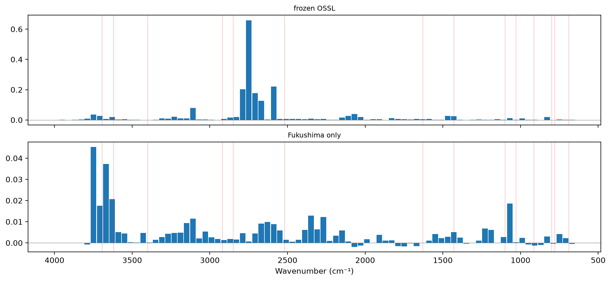

/Users/franckalbinet/pro/dev/soilspec/ossl-fuku-transfer/.venv/lib/python3.13/site-packages/torch/jit/_script.py:1491: FutureWarning: `torch.jit.script` is deprecated. Please switch to `torch.compile` or `torch.export`.
warnings.warn(
Cs-137 is fixed at the frayed edges of illite and other micas, so the ratio of exchangeable to total Cs-137 should depend on those clay minerals. 17_importance found that the OSSL Kex model relies most on the Al–OH band near 3620 cm⁻¹, part of their signature. 18_aloh found that in Fukushima’s Lowland soils, the clay-mineral bands correlate negatively with clay, the reverse of OSSL. This notebook asks the same questions of the Cs-137 ratio.
Every code cell reads the Fukushima data or the saved OSSL models, and is marked #| fukudata.
Data and models
The Cs-137 ratio of 10_cs137 (log10 of exchangeable over total Cs-137), the current selection of Fukushima spectra, and the Cs137 study’s test set. Two models:
frozen OSSL: block 4 of the OSSL Kex model, frozen, with a ridge regression on its flattened output, as in 10_cs137. It is built with CutCNN and ridge_head from soilspecdl, so integrated gradients apply to it.
Fukushima only: the CNN from random weights, trained on the Fukushima training samples for 40 epochs at a maximum learning rate of 3·10⁻³, the Kex schedule of 03_kex, not tuned for the ratio.
Their test scores:
ref = fuku_path()/'reference'ratio = pd.concat([pd.read_csv(ref/f'cs137_ratio_{s}.csv', usecols=['ID', 'exCs137_totalCs137']) for s in ('train', 'test')])ratio = ratio.assign(ID=ratio.ID.astype(str)).set_index('ID')['exCs137_totalCs137']fuku = load_fuku()fuku.source = fuku.source.assign(target=ratio)Xf, yf, idf = fuku.xy('target')yf = yf.ravel()Xf_d = preprocessings()['snv_d1'].fit_transform(Xf)is_test = np.isin(idf, cs137_split()[1])tr = np.flatnonzero(~is_test)models = {'frozen OSSL': ridge_head(CutCNN(load_pretrained('ossl_kex_snv_d1'), len(shared_wns), flat=True), Xf_d[tr], yf[tr], shared_wns)}set_seed(0)learn = spectral_learner(fuku_dls(Xf_d, yf, is_test, seed=0), SpectralCNN())with learn.no_bar(), learn.no_logging(): learn.fit_one_cycle(40, lr_max=3e-3)models['Fukushima only'] = learn.model.cpu()pd.DataFrame({m: regression_scores(yf[is_test], predict(model, Xf_d[is_test], shared_wns)) for m, model in models.items()}).round(3)
frozen OSSL
Fukushima only
R²
0.641
0.569
r
0.805
0.763
RMSE
0.207
0.226
bias
0.030
0.038
Wavenumber importance
The mean absolute integrated gradient per wavenumber on the test spectra, scaled to sum to 1, with the band assignments and regions of 17_importance:
The rise in mean squared error when each 40 cm⁻¹ window is flattened, and the five windows that matter most for each model:
occ = {m: occlusion(model, Xf_d[is_test], yf[is_test]) for m, model in models.items()}fig, axs = plt.subplots(2, 1, figsize=(11, 5), sharex=True, layout='constrained')for ax, (m, d) inzip(axs, occ.items()): ax.bar(d.wavenumber, d['rise in MSE'], width=36); ax.axhline(0, lw=0.5, c='grey'); ax.set_title(m, fontsize=9)for w in bands: ax.axvline(w, lw=0.4, c='tab:red', alpha=0.5)axs[-1].invert_xaxis(); axs[-1].set_xlabel('Wavenumber (cm⁻¹)')pd.DataFrame({m: d.nlargest(5, 'rise in MSE').wavenumber.round(0).to_numpy() for m, d in occ.items()}, index=range(1, 6))

frozen OSSL
Fukushima only
1
2749.0
3749.0
2
2589.0
3669.0
3
2789.0
3629.0
4
2709.0
1069.0
5
2669.0
3709.0
Clay-mineral bands and the ratio
The second-derivative depths of 18_aloh on the SNV spectra, and their Spearman correlation with the Cs-137 ratio, overall and by soil type, with clay and Kex for context. Soil types with fewer than 30 samples are left out. Clay is missing for some samples, and each correlation uses the samples that have both values:
S = SNV().fit_transform(Xf)depth = {b: band_depth(S, shared_wns, c) for b, (c, *_) in sharp_bands.items()}pp = fuku_shared_props(idf)cols = {'Cs ratio': yf, 'clay': pp['clay'].to_numpy(dtype=float), 'Kex': pp['K'].to_numpy(dtype=float)}def rho(x, y, msk): ok = msk & np.isfinite(x) & np.isfinite(y)return spearmanr(x[ok], y[ok])[0] if ok.sum() >=30else np.nansoil = pp['soil'].to_numpy()groups = {'all': np.ones(len(yf), bool), **{s: soil == s for s in pd.Series(soil).dropna().value_counts().index}}rows = {}for g, msk in groups.items(): r = {'n': int(msk.sum())}for b in sharp_bands:for k, y in cols.items(): r[f'{b} vs {k}'] = rho(depth[b], y, msk) r['Cs ratio vs clay'] = rho(yf, cols['clay'], msk) r['Cs ratio vs Kex'] = rho(yf, cols['Kex'], msk) rows[g] = rpd.DataFrame(rows).T.round(3)
n
Al–OH 3620 vs Cs ratio
Al–OH 3620 vs clay
Al–OH 3620 vs Kex
kaolinite 3695 vs Cs ratio
kaolinite 3695 vs clay
kaolinite 3695 vs Kex
Cs ratio vs clay
Cs ratio vs Kex
all
1389.0
-0.202
-0.186
-0.086
-0.205
-0.240
-0.033
0.038
-0.070
Lowland soil
907.0
-0.202
-0.307
-0.122
-0.187
-0.354
-0.064
0.116
-0.004
Andosols
213.0
-0.267
0.137
0.095
-0.260
0.054
0.139
-0.051
0.039
Forest soil
138.0
-0.038
-0.100
-0.156
-0.135
-0.185
-0.127
-0.082
-0.215
Peat soil
66.0
0.118
-0.111
-0.268
0.093
-0.199
-0.213
0.049
-0.492
Red yellow soil
46.0
-0.223
0.321
-0.091
-0.074
-0.059
-0.055
-0.214
-0.422
Glay soil
16.0
NaN
NaN
NaN
NaN
NaN
NaN
NaN
NaN
Findings
The Fukushima-only CNN relies on the clay-mineral O–H region for the Cs-137 ratio. By integrated gradients, 11% of its importance lies in 3600–3700 cm⁻¹, more per cm⁻¹ than any other region. In the occlusion test, its most important window is centred at 3749 cm⁻¹, just above the clay-mineral O–H bands. The next are at 3669, 3629 and 3709 cm⁻¹, within them, and the fifth at 1069 cm⁻¹, in the Si–O region. Its test R² is 0.57 (r 0.76), with the Kex schedule, which was not tuned for the ratio.
The frozen-OSSL model relies on other regions. It draws 32% of its importance from 2000–2800 cm⁻¹ and 20% from 2800–3200 cm⁻¹, and only 3.6% from 3600–3700 cm⁻¹. Its five most important occlusion windows all lie between 2589 and 2789 cm⁻¹. The two models’ profiles correlate at 0.36. Its ridge head reads standardised block-4 features, which gives large weights to features with little variance. Weak, quiet regions such as 2000–2800 cm⁻¹ may get their importance this way. Its test R² is 0.64 (r 0.81), the same as in 10_cs137.
The clay-mineral bands relate to the Cs-137 ratio as fixation on clay minerals predicts. Deeper bands go with a smaller exchangeable fraction: Spearman −0.20 for the Al–OH band and −0.21 for the kaolinite band, over all 1,389 samples. The relation holds in the Lowland soils (−0.20 and −0.19, 907 samples) and in the Andosols (−0.27 and −0.26, 213 samples).
So the Cs-137 ratio does not show the reversal that clay shows. In the Lowland soils, the band depths correlate negatively with clay (−0.31 and −0.35), but negatively with the Cs-137 ratio too, as expected. The ratio itself correlates with clay at 0.12 in the Lowland soils and 0.04 overall, where fixation would predict a negative relation. The bands track the Cs-137 ratio as expected, and clay doesn’t. The odd one out in the Lowland soils is more likely the clay values, or clay amount as a measure of the fixing minerals, than the bands. That is an interpretation of these correlations, not a test.
Kex correlates with the Cs-137 ratio at −0.49 in the 66 Peat soils, −0.42 in the 46 Red yellow soils and −0.22 in the 138 Forest soils, and near 0 in the Lowland soils and Andosols.